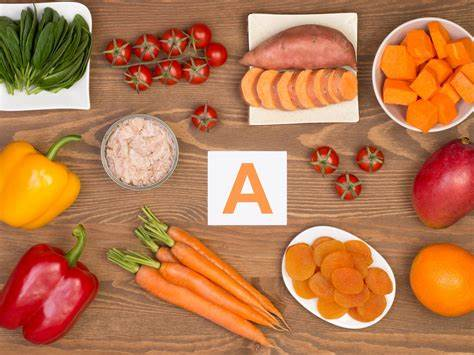
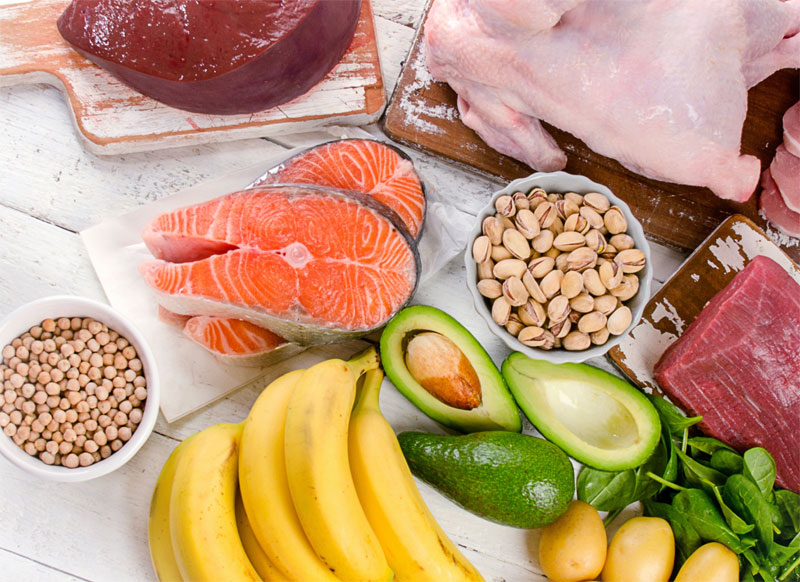
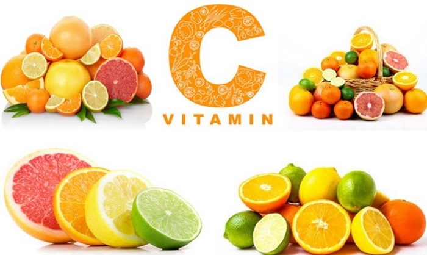
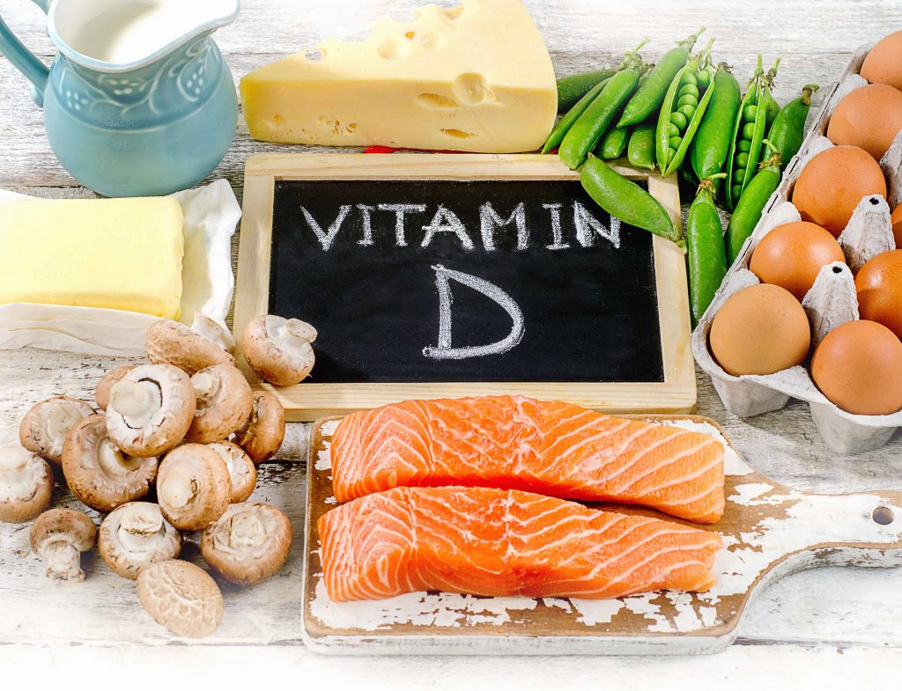
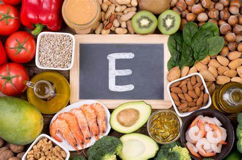
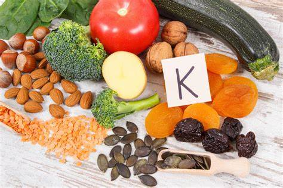

A-vitamin
A-vitaminok a szem és a bőr egészségéhez szükségesek, valamint fontosak az immunrendszer megfelelő működéséhez is.
B-vitaminok
A B-vitaminok csoportja sok fontos funkciót lát el a szervezetben, például segítenek az energiatermelésben és a vérképzésben is.
C-vitamin
A C-vitamin fontos szerepet játszik az immunrendszer megfelelő működésében, valamint segít az egészséges bőr és szövetek kialakulásában is.
D-vitamin
A D-vitamin fontos a csontok és fogak egészségének megőrzésében, valamint segít az immunrendszer működésének fenntartásában is.
E-vitamin
A E-vitamin erős antioxidáns, amely védi a sejteket a szabadgyökök káros hatásaitól.
K-vitamin
A K-vitamin fontos szerepet játszik a véralvadás folyamatában, valamint segíti a csontok egészségét is.
